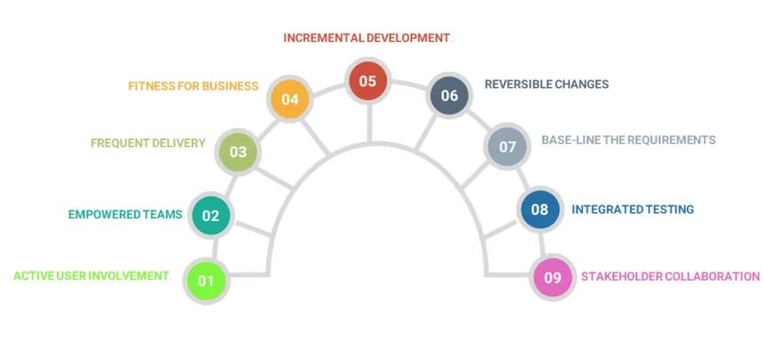

What is it?
DSDM is an agile project delivery framework that emphasizes rapid development and iterative delivery of software systems, with strong user involvement. It was first released in 1994 as a response to the need for more structured agile methods.
Where is it used?
Pros and Cons
| Pros | Cons |
|---|---|
| Time-boxed and iterative, ensuring frequent delivery | Can be complex to implement without proper training |
| Strong focus on collaboration and end-user involvement | Requires consistent user input, which may not always be available |
| Clearly defined roles and responsibilities | Not suitable for projects with rapidly changing requirements (compared to Scrum or Kanban) |
| Scalable for both small and large projects |